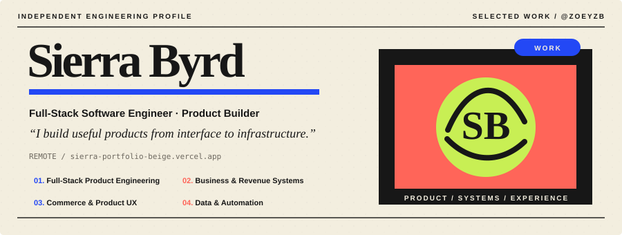
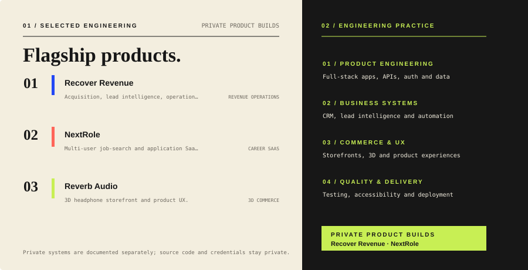

Full-stack software engineer building useful products, AI systems, and the workflows behind them.
PORTFOLIO · LINKEDIN · EMAIL · GITHUB
Open to remote software engineering opportunities.

What I build
- Product engineering: Full-stack applications, APIs, authentication, databases and deployment.
- AI and voice systems: Agent workflows, voice interfaces, speech pipelines and tool integrations.
- Workflow and data: Lead acquisition, qualification, CRM workflows, enrichment and automation.
- Interactive experiences: Responsive interfaces, 3D experiences, motion and product-focused UX.
I work across the product lifecycle: understanding the problem, shaping the interface, implementing the backend and data flow, integrating services, and checking that the important paths actually work.
Selected work
Private product systems
- Recover Revenue · Technical case study — Full-stack growth platform spanning public acquisition, SEO/search, buyer journeys, lead discovery and qualification, outreach, follow-up, owner operations and conversion tracking. The public website is live; the internal source remains private.
- NextRole · Technical case study — Job-search workspace for role discovery, posting imports, résumé and application preparation, review-first automation and application tracking. In active development; external provider capabilities depend on configuration.
Public engineering repositories
- YOURAGENT — Multi-tenant AI voice-agent SaaS with organization-scoped data, encrypted runtime credentials, agent versioning, guarded deployment and call-history evidence.
- TasteAtlas AI — Interactive 3D cultural discovery using Qloo API orchestration and explainable recommendations. The sample atlas is explicitly illustrative; live results still require validation with the event-issued key.
- ChatGPT SMS MCP — Local MCP server for macOS Messages and Google Voice, with two-step send confirmation, idempotency, recipient allowlists and hourly send limits.
Product and interface work
- RevenueOS — Revenue-intelligence dashboard demo covering CRM, pipeline, marketing, retention, subscriptions, transactions and reporting. Uses illustrative sample data rather than a live production backend; its local smoke suite passed 96 checks during this audit.
- Chroma Hair Atelier — Responsive salon website with service navigation and an appointment-request builder; real booking integration is not connected.
- HEYREN — 3D, voice-first assistant experience with scripted conversation previews and selectable workflows. The showcase is illustrative; it does not place live calls or write to a real CRM/calendar.
Private voice QA system
- Patient Voice QA Harness · Technical case study — Synthetic-patient voice QA using LiveKit Agents, Deepgram and Groq, with scripted scenarios, separate audio tracks, timestamped transcripts and evidence-backed evaluation. Offline implementation is distinct from live-call validation, which is not claimed as complete.
Technical toolkit
- Languages: TypeScript, JavaScript, Python, SQL, HTML and CSS; additional experience with Java, C++, Rust and GDScript.
- Frontend: React, Next.js, Vite, Tailwind CSS, Three.js, React Three Fiber, GSAP and Framer Motion.
- Backend and data: Node.js, FastAPI, Flask, PostgreSQL, Supabase, Neon, REST APIs and authentication.
- AI and integrations: OpenAI APIs, LiveKit, Deepgram, Groq, Qloo, MCP servers, voice workflows and browser automation.
- Quality and delivery: Vitest, Pytest, Playwright, TypeScript checks, linting, CI workflows and Vercel deployments.
Contribution activity and stack


Paper Signal visual system adapted from Pretty GitHub. Dynamic activity and stack cards generated by Readme Atelier. See third-party notices.